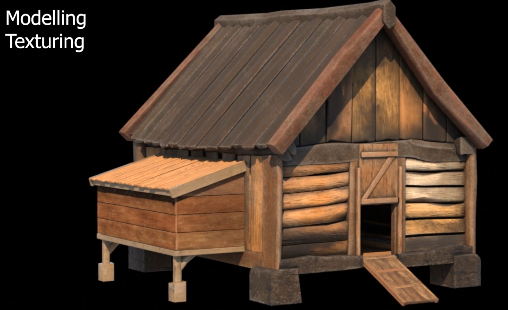
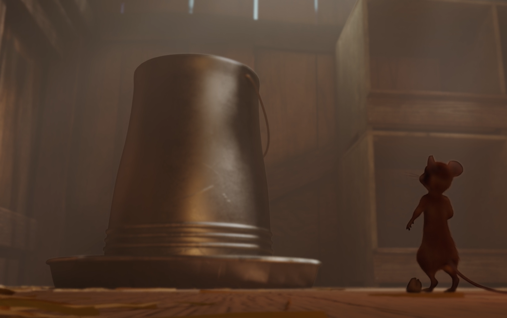
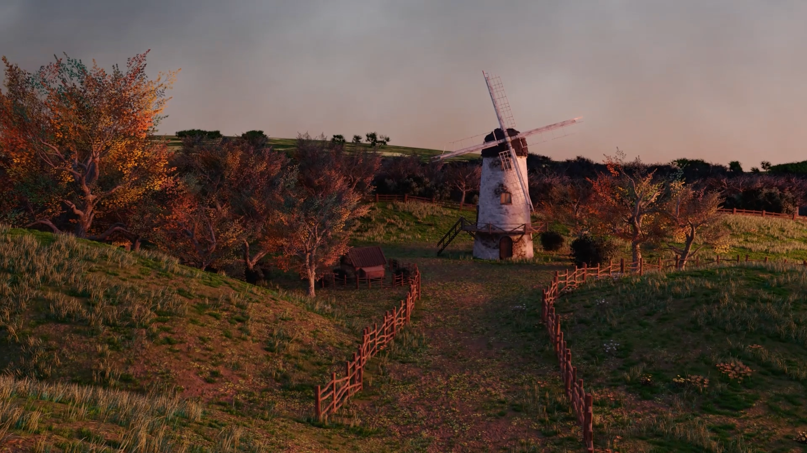
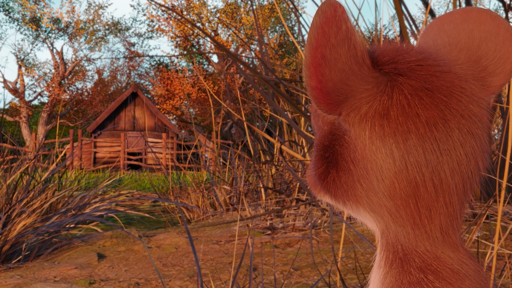
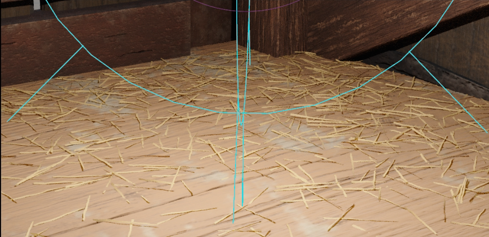
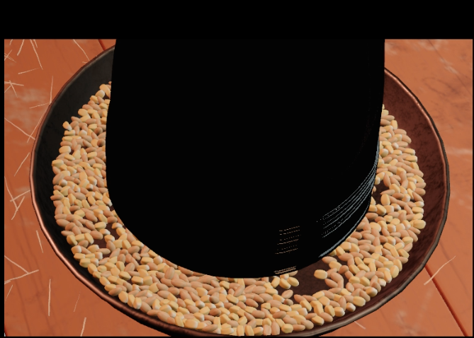

A Grain of Hope
This is a short film I built together with a team from September 2025 to May 2026.
Production
Models
Most of the environment and prop models were made by me, like the windmill and chicken coop. I used Substance Painter for the texturing.


Environment
I built the main prop models in Blender as this was the software I work fastest in. Textures were done in Substance Painter.
Scene assembly was done entirely in Houdini, as well as procedural generation and scattering of grass.


Animation
I did not do any animation myself, however, I did work on the software pipeline, which made it easier to sync assets between scenes, allowing them to be iteratively modeled and placed into the animated scene faster.
This was achieved through use of USD, which is well integrated with Houdini's Solaris scene assembly tool. This allows an asset to be non-destructively linked, such that you can update the file, and this will automatically apply changes everywhere.
The chicken coop, windmill, and the straw benefitted most from this, as getting them to look right and match the animation was an iterative process with a lot of refinement needed.


Rendering
Rendering was one of the most time consumning parts of the project. We used Karma, the built in Houdini renderer, for this.
Breakdown Video
Credits
Team Members
- Paula Laverty - Creative Direction, Concept Art, Animation, Modelling
- Nick Turner - Environment and Hard Surface Modelling, Procedural Generation, Compositing, Research and Development
- Ellie Tarrant - Animation, Sculpting, Modelling, Rigging
- Cara Mannix - Animation, Sculpting, Modelling, Fur Groom, Rigging
Supervisors
- Eike Anderson
- Rehan Zia
Special Thanks
- Isabella Laverty - Music
- Chris Hosken - Technical Support
- Dominic Cowling - Technical Support